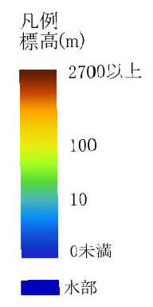

震央分布
全日
2024年01月01日
2024年01月02日
2024年01月03日
2024年01月04日
2024年01月05日
2024年01月06日
2024年01月07日
2024年01月08日
2024年01月09日
2024年01月10日
2024年01月11日
2024年01月12日
2024年01月13日
2024年01月14日
2024年01月15日
2024年01月16日

震源深さ
5km未満
10km未満
15km未満
20km未満
30km未満
40km未満
40km以上
マグニチュード
M3
M4
M5
デジタル標高地形図 不透明度:
100%